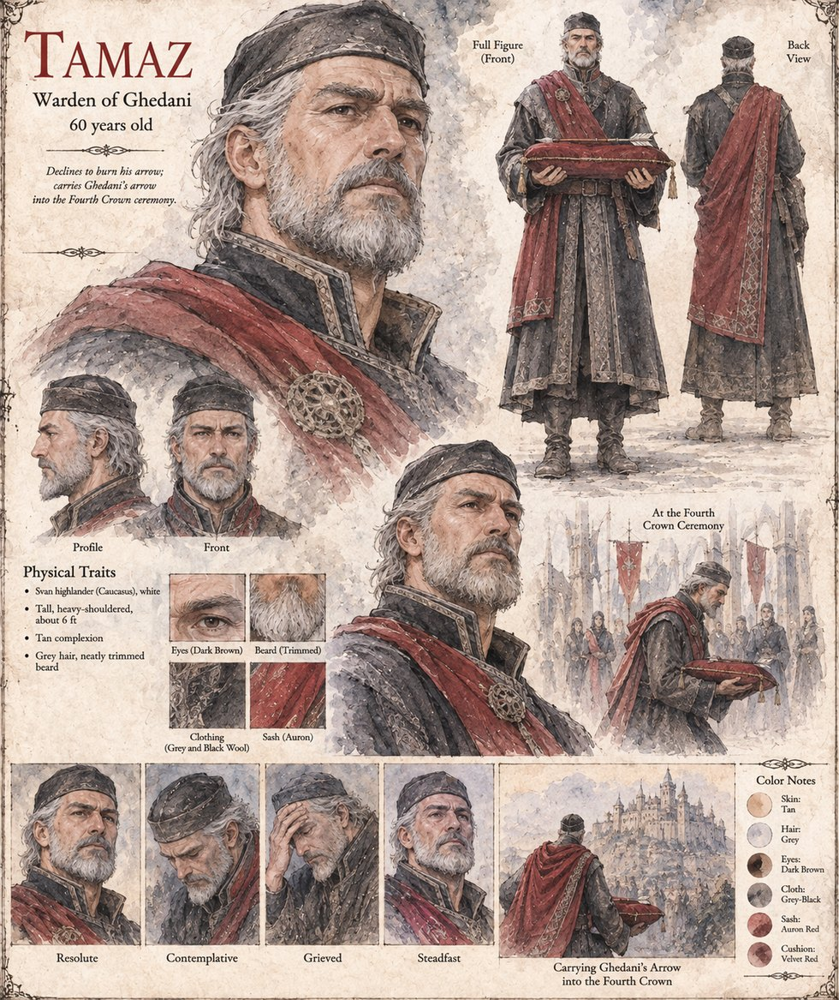

Tamaz
Warden of Ghedani, the Father’s own family tower · bearer of the last living arrow · 60 on his sheet
Warden of Ghedani, the seat of the family from which the Hierarch Gurgen had come, which makes it the Father’s own family tower and lets Gurgen say, without lying, that he holds no arrow himself. When Levan, Shalva and Archil meet in the forge at Kharzeni in the thirtieth year to burn theirs, Tamaz is invited, and declines. He holds that an oath to the Father was an oath to the Father’s Hierarch, and that the Hierarch had made his wishes plain. So the last of the glass cases in the north stands unbroken, in a valley that was, by every definition available, Gurgen’s.
When the Council is dead and the Concordat a memory, Ghedani holds for the Father, which is to say for Gurgen, and keeps the last living arrow in Vashkeni but the king’s own; it will not release it to the Rite until the Voice of the Remainder has given her blessing to the Fourth Crown, which the new doctrine requires and Gurgen’s college cannot supply. At the crowning, in the open court under a clear, windless and lovely sky, Ghedani’s arrow, the last living arrow in the world, was carried in on a cushion by Warden Tamaz in the colours of the Father, while Ketevan sat in the first row of the visitors’ benches with her ankles crossed and her ledger on her knee. The manuscript gives him no word of his own.
The manuscript gives his valley, his refusal, his reason and the cushion, and no age, face or colouring. The sheet’s age of 60, tall, heavy-shouldered build of about 6 ft, tan complexion, grey hair, neatly trimmed grey beard, dark brown eyes and grey-and-black wool coat with a red sash in the colour it calls Auron red and a round brass medallion are its own, as are its panels Resolute, Contemplative, Grieved and Steadfast. Its scenes, At the Fourth Crown Ceremony and Carrying Ghedani’s Arrow into the Fourth Crown, follow the manuscript, and the tagline it prints, Declines to burn his arrow; carries Ghedani’s arrow into the Fourth Crown ceremony., condenses them.
“an oath to the Father was an oath to the Father’s Hierarch”